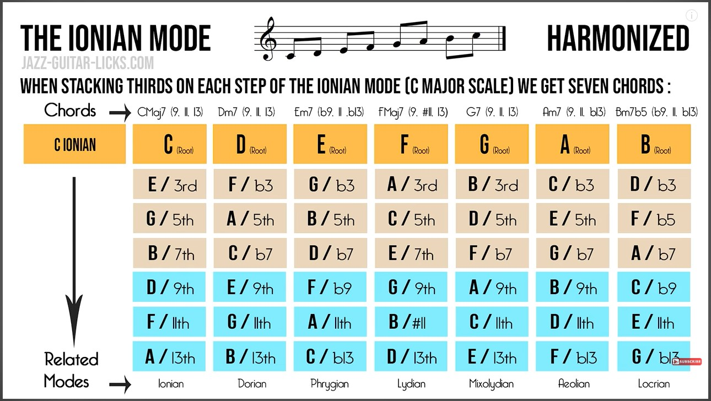
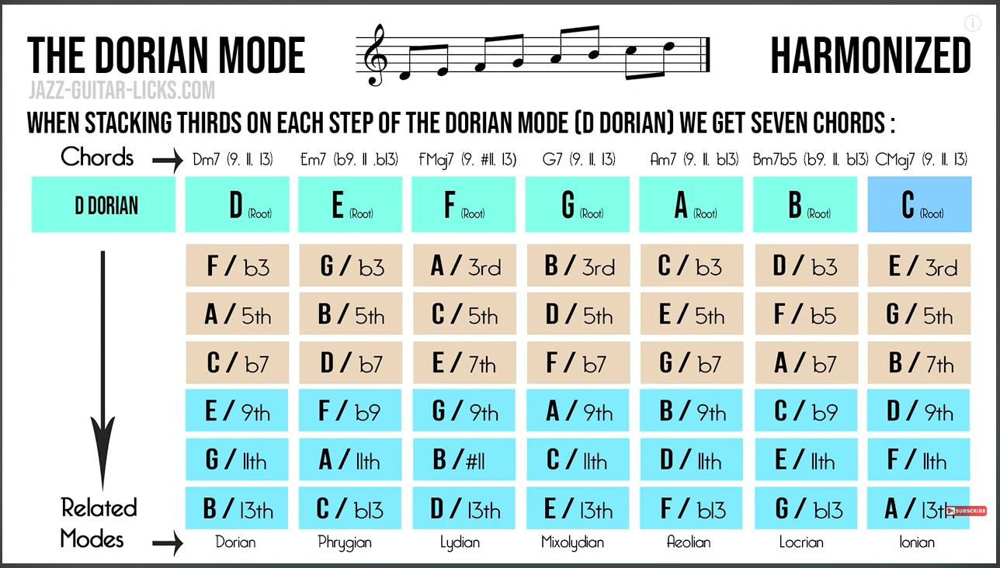
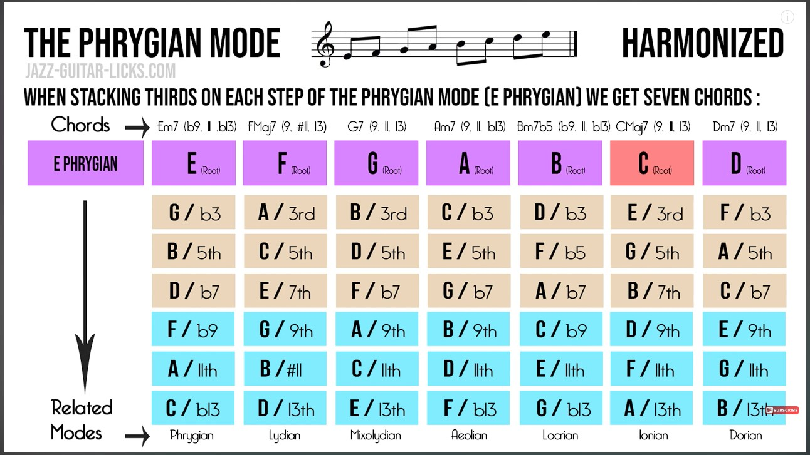

Музыка
Лады
I. Ionian

Ионийский (Натуральный мажор). «Светлая» и «радостная», в противоположность окраске минора.
-
Мелодический мажор
В нём при движении вверх звучит натуральный мажор, а при движении вниз понижены д�ве ступени: VI и VII
-
Гармонический мажор
Пониженная 6 ступень
II. Dorian
Дорийский (минорный с мажорным оттенком). Минор с повышенной 6-ой в античности и средневековье. Название происходит от одного из главных племён Древней Греции.

III. Phrygian
Фригийский. Натуральный минор, в котором 2-ая ст. понижена

IV. Lydian
Лидийский. Натуральный мажор, в котором 6-ая ст. повышена
V. Mixolydian
Миксолидийский. Мажор с пониженной 7-ой. Античность и средневековье, играет значительную роль в блюзе, джазе, рок-н-ролле и кантри
VI. Aeolian
Эолийский (Натуральный минор). Грустный, печальный
VII. Locrian
Локрийский. Натуральный минор, в котором 2-ая и 5-ая ст. понижена. Локрийский лад обладает гнетуще-мрачной, суровой и горько-печальной окраской, воспринимается на слух довольно резко и неприятно
Восточные лады
-
Арабский: Натуральный мажор, у которого понижена 2-ая и 6-ая ступени
-
Юго-Восточнай
с - с# - d# - g - g# - c -
Японский
с - с# - f - g - g# - c
Пентатоника
-
Минорная
с - d# - f - g - a# - c
-
Мажорная
с - d - e - g - a - c
-
Минорная блюзовая гамма
с - d# - f - f# - g - a# - cМинорная пентатоника с тритоном.
-
Мажорная блюзовая гамма
с - d - d# - e - g - a - cМажорная пентатоника с мал. терцией. Есть и большая и малая терция в гамме
-
CAGED схемы
Тональности
TODO
Круг аккордов
TODO
Аккорды
TODO
Аккордовые последовательности
TODO
Ритмические рисунки
TODO
Композиция
Как и в живописи в музыкальной композиции должен быть передний, средний и задний (дальний) план
- ПЕРЕДНИЙ ПЛАН
- Главная идея, передача сути
- Должно быть хорошо слышно и понятно, громко и четко (как правило)
- Основаная мелодия, верхний голос
- Вокал
- Соло
- Выделение из общего микса
- СРЕДНИЙ ПЛАН
- Бэк-вокал
- Заполнения
- Ритм-секция
- Ударные, перкусия
- Бас
- Может тоже быть музыкой без особой мелодии вообще
- ДАЛЬНЫЙ ПЛАН
- Гармония
- Заливка
- Пэды и эффекты
- Всякие еле заметные "фишечки"
- Могут выныривать на средний или верхний план (часто при заполнениях)
Как можно выделить звук на передний план:
- За счет ГРОМКОСТИ, динамики.
- За счет ТЕМБРА звука, эквализации (более яркий и высокий тэмбр лучше слышно чем низкий). Пример, гитарист во время соло включает дистошн.
- За счет ДЕКОМПОЗИЦИИ. Играет только один инструмент. Как пример отключаяется ритм-секция и играет только одна гитара.
- За счет РИТМА. Более ритмичная игра с акцентами и паузами больше привлекает внимание чем простые целые ноты по длительности.
Песня
- Мелодия
- Поэтическая глубина
- Хуки
- Аранджировка
Инструментал
- Мелодия (какой инструмент или электронный)
- Ритм
- Эффекты
- Композиция (передний, средний и задний план)